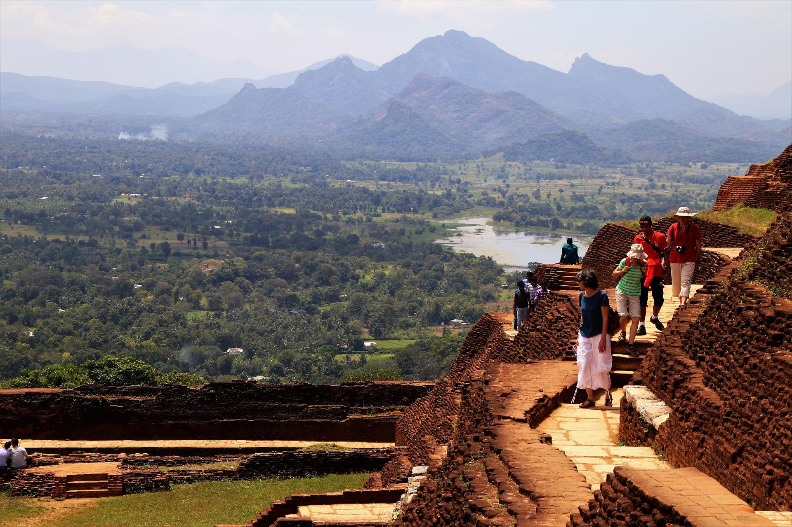

What is Sigiriya ?

Sigiriya is an old rock castle and palace that stands magnificently 660 feet straight up, erected by King Kashyapa between 473 and 495. It's in Sri Lanka's central province, near the town of Dambulla, in the northern Matale district.
The Lion's Rock, also known as Sigiriya or Sinhagiri, is reached by ascending 1200 steps to the Lion Rock Fortress on top of Sigiriya.
History of Sigiriya Rock Fortress

Historical research at the site has uncovered evidence that the roots of Sigiriya can be traced back to prehistoric times. Aligala Monastery is located at the base of the Sigiriya rock on the eastern side of the island (Elephant Rock). Excavations in a cave under this have discovered the remains of prehistoric human communities that were here circa 5,500 years B.P. Furthermore, there is evidence of human occupancy in this area dating back to the ninth and tenth centuries B.C.
Things to do in Sigiriya

- Climb the world-famous Sigiriya Rock
- Watch the sunset from the top of Pidurangala Rock
- View the Temple of the Sacred Tooth Relic (a sacred tooth of the Buddha), a revered site
for holy pilgrims
- Check out Pethikada paintings and crafts.
- Learn about Sigiriya at the Sigiriya Archaeological Museum
- Shop for Handmade Wooden Souvenirs
- Hot Air Balloon Ride